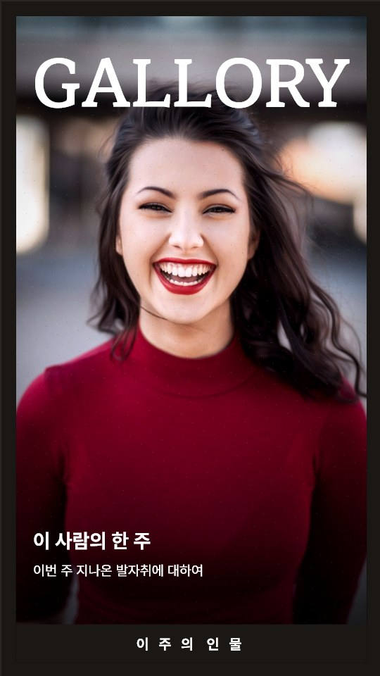
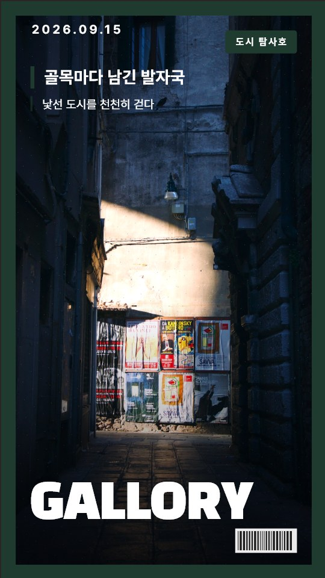
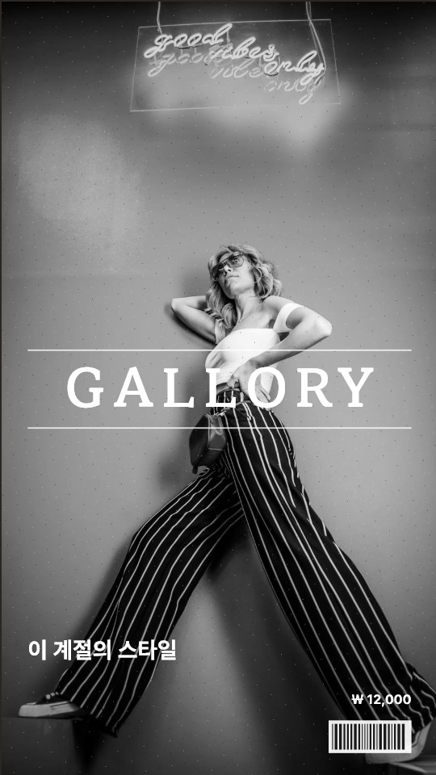
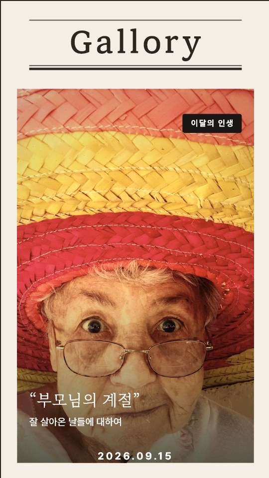
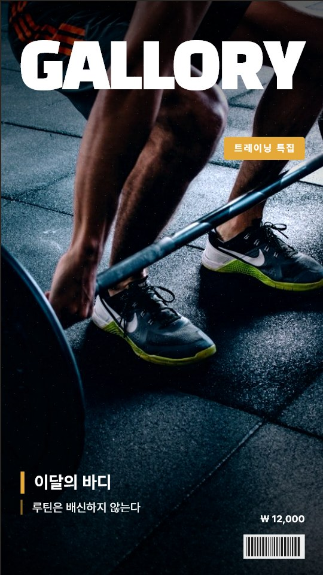
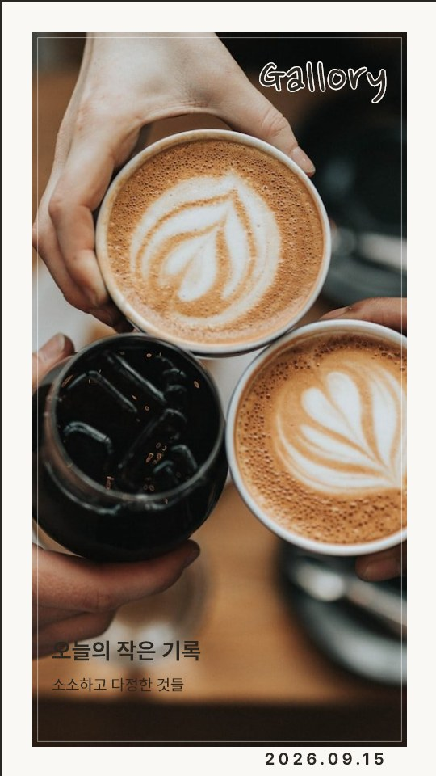

사진을 고르면 표지가 되고, 더 고르면 속지가 깔립니다. 좋아하는 맛집은 지도로, 여행은 경로를 손으로 그려 한 권에. 자동으로 만들어 주는 앱이 아니라, 당신이 만드는 앱입니다.
출시 소식과 문의: support@gallory.app
주간지·여행·그림책·패션·인생·맛집 — 잡지 가판대에서 마음에 드는 표지를 고르고 사진 한 장을 넣으면 끝. 제호·문구·재료는 손으로 바꿉니다.
사진을 여러 장 고르면 첫 장은 표지, 나머지는 스크랩처럼 속지에 깔립니다. 인화지 테두리, 스티커, 손글씨, 테이프까지 마음껏.
맛집엔 핀을, 여행엔 손으로 그린 경로를. 완성한 한 권은 인스타 피드·스토리 크기 이미지나 PDF로 내보냅니다.
보는 순간 "이건 이렇게 만들어야겠다"가 떠오르도록 — 장르마다 다른 문법의 표지를 준비했습니다.






사진 정리, 얼굴 앨범, 자동 회상 — 그건 폰이 이미 합니다. Gallory는 그 다음, 남에게 보여줄 한 권을 당신이 만들게 합니다.
계정도, 서버 업로드도, 광고도 없습니다. 사진은 단 한 장도 폰 밖으로 나가지 않습니다. 지도 그림을 받아오는 통신뿐입니다.
표지 한 장은 무료로 만들고, 내보내고, 나눌 수 있습니다. 속지가 있는 한 권과 프리미엄 재료만 Pro입니다.
시즌·이벤트 재료 팩은 ₩990에 따로 살 수 있습니다. 가격은 나라별 스토어 기준으로 표시됩니다.
아니요. 계정도 서버도 없습니다. 만드는 일도, 얼굴로 찾는 일도 전부 폰 안에서 계산합니다. 지도를 열 때 지도 그림을 받아오는 통신만 있습니다.
아니요. 그건 구글 포토와 애플 사진이 이미 잘 합니다. Gallory는 당신이 고른 사진으로 당신이 직접 한 권을 만드는 앱입니다. 초안은 깔아 드리지만 배치·문구·재료는 당신 손으로.
표지 한 장은 끝까지 무료입니다. 만들고, 내보내고, 나누세요. 속지가 있는 한 권을 저장·내보낼 때만 Pro가 필요합니다. 꾸며 보는 건 언제나 무료입니다.
한국어·영어·일본어·스페인어·포르투갈어. 한글 명조와 일본어 명조 제호 글꼴이 들어 있습니다.